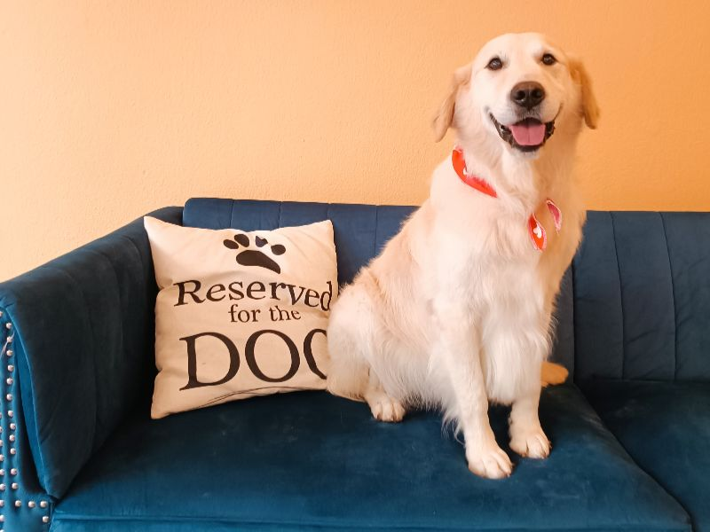

Στο Pawsh Pet Beauty Salon προσφέρουμε επαγγελματικές υπηρεσίες pet grooming, κομμωτηρίου σκύλων και καλλωπισμού σκύλων στο Γαλάτσι. Εξυπηρετούμε κηδεμόνες από Γαλάτσι, Κυψέλη, Πατήσια, Ψυχικό και Φιλοθέη, με στόχο τη χαρά και την ευεξία κάθε κατοικιδίου.
Η φιλοσοφία του Pawsh στηρίζεται στην αγάπη για τα ζώα και στην πεποίθηση ότι ο καλλωπισμός είναι κάτι παραπάνω από περιποίηση: είναι μέρος της ευεξίας και της καθημερινής φροντίδας τους.
Για εμάς, κάθε σκύλος είναι ξεχωριστός. Δημιουργούμε ένα φιλικό και θετικό περιβάλλον, όπου συνδυάζουμε:
Στόχος μας είναι κάθε επίσκεψη στο Pawsh να είναι μια ευχάριστη εμπειρία τόσο για τον σκύλο όσο και για τον κηδεμόνα του.

Επαγγελματικές υπηρεσίες καλλωπισμού προσαρμοσμένες στις ανάγκες του κατοικίδιού σας, για όσους αναζητούν pet grooming στο Γαλάτσι με premium αισθητική και ουσιαστική φροντίδα. Για πλήρη ανάλυση κάθε υπηρεσίας επισκεφθείτε τη σελίδα Υπηρεσίες, ενώ για τοπική πληροφόρηση δείτε το κομμωτήριο σκύλων στο Γαλάτσι.
Χαρίστε στον τετράποδο φίλο σας την καθαριότητα και τη φρεσκάδα που του αξίζει. Το μπάνιο με εξειδικευμένα προϊόντα για σκύλους φροντίζει το δέρμα και το τρίχωμά του, ενώ το επαγγελματικό στέγνωμα εξασφαλίζει λάμψη και υγιή εμφάνιση. Ιδανική επιλογή για τακτική περιποίηση και για να απολαμβάνετε έναν σκύλο καθαρό, ευδιάθετο και γεμάτο ζωντάνια.
Μια ολοκληρωμένη περιποίηση που καλύπτει τις βασικές ανάγκες υγιεινής του κατοικιδίου σας. Μετά το χαλαρωτικό μπάνιο και το στέγνωμα, ακολουθεί προσεκτικό χτένισμα για απομάκρυνση τριχών και κόμπων. Ο καθαρισμός των αυτιών συμβάλλει στην πρόληψη λοιμώξεων, ενώ το κόψιμο νυχιών προστατεύει από τραυματισμούς και χαρίζει άνεση στην καθημερινότητά του.
Η απόλυτη φροντίδα για σκύλους που χρειάζονται ανανέωση. Μετά τις βασικές υπηρεσίες υγιεινής, ακολουθεί επαγγελματικό κούρεμα, προσαρμοσμένο στη ράτσα και τις ανάγκες του κάθε σκύλου. Το αποτέλεσμα είναι ένα κατοικίδιο καθαρό, περιποιημένο και γεμάτο αυτοπεποίθηση, με τρίχωμα υγιές και καλοσχηματισμένο.
Εξειδικευμένη υπηρεσία για σκύλους με σκληρό τρίχωμα. Το hand stripping βοηθά στη φυσική απομάκρυνση της νεκρής τρίχας, διατηρώντας τη σωστή υφή και την υγεία του τριχώματος. Σε συνδυασμό με το μπάνιο, το χτένισμα και την υπόλοιπη φροντίδα, ο σκύλος σας δείχνει και νιώθει στα καλύτερά του, με εμφάνιση που αναδεικνύει τα φυσικά του χαρακτηριστικά.
Μια περιποίηση ιδανική για σκύλους με έντονη τριχόπτωση. Η αφαίρεση της νεκρής τρίχας μειώνει το περιττό τρίχωμα στο σπίτι, ενώ επιτρέπει στο νέο τρίχωμα να αναπτυχθεί πιο υγιές και δυνατό. Ο καθαρισμός αυτιών και το κόψιμο νυχιών ολοκληρώνουν την εμπειρία, χαρίζοντας στο κατοικίδιό σας όχι μόνο εμφάνιση αλλά και πραγματική άνεση και υγεία.
Υποδεχόμαστε καθημερινά κηδεμόνες που αναζητούν ποιοτικό καλλωπισμό σκύλων στο Γαλάτσι και σε κοντινές περιοχές, πάντα με την ίδια προσοχή στη λεπτομέρεια και τη φροντίδα. Μάθετε περισσότερα στη dedicated σελίδα μας για pet grooming στο Γαλάτσι.
Οι εμπειρίες των πελατών μας επιβεβαιώνουν την ήρεμη, προσεγμένη και premium φροντίδα που θέλουμε να προσφέρουμε σε κάθε επίσκεψη.
Δες όλες τις αξιολογήσεις στο GoogleΜείναμε πλήρως ικανοποιημένοι από τις υπηρεσίες της Αλεξάνδρας! Με επαγγελματισμό και υπομονή φρόντισε το κοκόνι μας! Πολύ όμορφος και καθαρός χώρος που θα επισκεφθούμε ξανά! Ευχαριστούμε! Καλές δουλειές!
Εξαιρετική δουλειά, πολύ φιλικό περιβάλλον και φωτεινός και περιποιημένος χώρος!!! Όσο για την Αλεξάνδρα, δεν έχω λόγια πρόσεξε πάρα πολύ την Αρίθα και την περιποιήθηκε σαν να ήταν δική της!!! Σ' ευχαριστούμε πάρα πολύ και εννοείται πως θα ξανάρθουμε!!!
Για μας το μπάνιο είναι μια στρεσογόνα κατάσταση, παρόλα αυτά η Αλεξάνδρα κατάφερε με τη θετική της προσέγγιση να το κάνει απόλαυση! Ο χώρος είναι ανοιχτός και φωτεινός και οι τιμές πολύ σωστές για τις εποχές που διανύουμε. Ευχαριστούμε Αλεξάνδρα, σίγουρα μας κέρδισες!
Αφήσαμε τον Γκρεγκ για κούρεμα και μπάνιο και τον παραλάβαμε σαν καινούργιο. Φιλική εξυπηρέτηση και πραγματικό ενδιαφέρον για τα ζώα.
Πρώτη επίσκεψη στο Pawsh και ο μικρός μας Λάκι βγήκε άλλος σκύλος! Επαγγελματισμός, καθαριότητα και χαμόγελα παντού.
Υπέροχος χώρος και φανταστικό αποτέλεσμα. Οι τιμές είναι προσιτές και η Αλεξάνδρα φαίνεται πως αγαπάει πραγματικά τη δουλειά της.